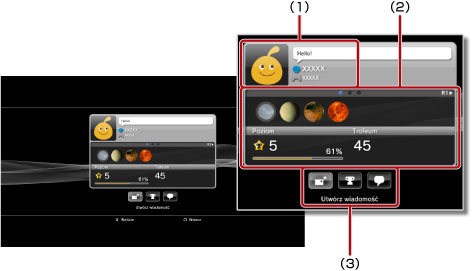
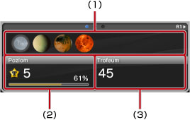

Znajomi > Lista znajomych > Wyświetlanie profili
Wyświetlanie profili
Aby używać tej funkcji, może być konieczne zaktualizowanie oprogramowania systemowego.
Można wyświetlić swój profil lub profil znajomego. Aby wyświetlić profil znajomego, należy wybrać jego awatar.

(1) |
Wyświetlanie stanu |
|---|---|
(2) |
Informacje |
(3) |
Panel sterowania |
Wskazówka
Więcej informacji na temat wyświetlanego stanu można znaleźć w temacie  (Znajomi) > [Friends list] > [Sprawdzanie stanu] w niniejszej instrukcji.
(Znajomi) > [Friends list] > [Sprawdzanie stanu] w niniejszej instrukcji.
Wyświetlanie informacji na ekranie profilu
W profilu można wyświetlać takie informacje, jak postępy w zdobywaniu nagród, liczba zdobytych nagród dla każdego poziomu oraz szczegółowe informacje o znajomych. Między informacjami można się poruszać, używając przycisku L1 lub R1.

(1) |
Ostatnio zdobyte nagrody |
|---|---|
(2) |
Bieżący poziom i postęp w następnym poziomie |
(3) |
Łączna liczba zdobytych nagród |
Korzystanie z panelu sterowania w oknie [Profil]
Wyświetlając profil, za pomocą panelu sterowania można wykonywać różne operacje. Ikony wyświetlane na panelu sterowania zmieniają się w zależności od stanu znajomego.
 |
Menu (tytuł gry) | Wyświetlana jest lista czynności, które można wykonać w bieżącej grze. |
|---|---|---|
 |
Dodaj znajomego | Wysyłanie prośby o dodanie do listy znajomych. |
 |
Lista wiadomości | Wyświetla listę wiadomości, które były wymieniane ze znajomym. |
 |
Utwórz wiadomość | Utworzenie nowej wiadomości. |
 |
Porównaj trofea | Porównanie postępu w zdobywaniu nagród ze stanem znajomego. |
 |
Rozpocznij nowy czat | Rozpocznij czat. |
 |
Odpowiedz na prośbę o dodanie znajomego | Otworzenie wiadomości z prośbą o dodanie jako znajomego i wysłanie odpowiedzi. |
 |
Dodaj do listy zablokowanych | Dodanie znajomego do listy zablokowanych. |
 |
Usuń z listy zablokowanych | Usunięcie znajomego z listy zablokowanych. |
Wskazówki
- Panelu sterowania nie można ukryć.
- Panel sterowania nie jest wyświetlany podczas oglądania własnego profilu.
Zmiana koloru tła ekranu profilu
Wybierz lewą górną kartę na ekranie profilu, a następnie naciśnij przycisk  , aby wyświetlić paletę kolorów. Wybierz kolor tła ekranu profilu z palety.
, aby wyświetlić paletę kolorów. Wybierz kolor tła ekranu profilu z palety.

Wskazówka
Nie można zmieniać koloru tła ekranów profilów innych osób.
Porównywanie stanu zdobytych trofeów ze znajomymi
1. |
W obszarze |
|---|---|
2. |
Wybierz opcję
|
3. |
Wybierz grę.
|